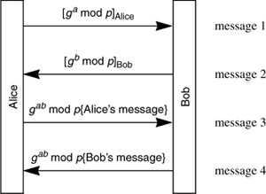

Networking Security Networking Security Networking Security Security Networking Security Networking Security Networking Charlie Kaufman Radia Perlman Mike Speciner Prentice Hall Network Security: Private Communication in a Public World, Second Edition
16.10. Plausible Deniability
If a protocol involves having Alice sign something containing Bob's name, then it offers proof that Alice intentionally talked to Bob (though it still gives no indication of what they talked about). In some cases Alice would like to assure Bob that it is her, but not provide proof that she talked to Bob. If Alice and Bob are authenticating each other based on a shared secret, then there is no way to prove to a third party that Alice and Bob communicated with each other, because the entire conversation could have been constructed by Alice or Bob. If Alice and Bob authenticate each other using public encryption keys, anyone could create an entire conversation that looks like a conversation between Alice and Bob (e.g., consider Protocol 16-7, and change the first two messages from being signed by the sender to being encrypted with the recipient's public key. No knowledge of either side's private key is required to create such messages). If Alice and Bob authenticate each other using public signature keys, then it is possible to create a protocol in which each signs information including the other's identity, in which case there is no plausible deniability. But it is also possible to avoid signing the other side's identity, and therefore preserving plausible deniability (see Protocol 16-7).

|